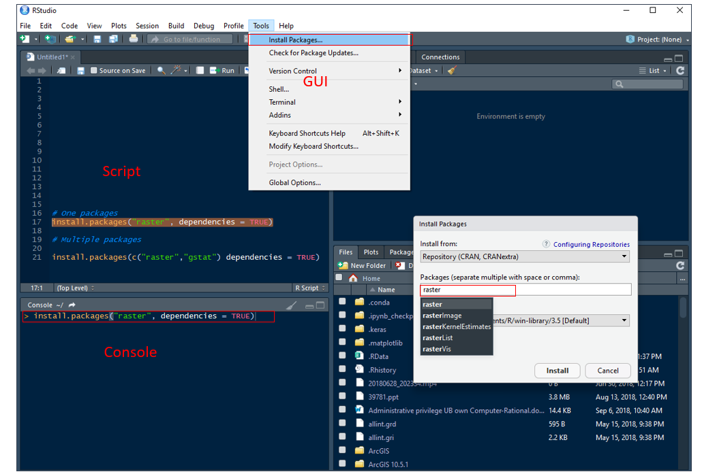

Getting Started with R
What is R?
R is an open-source environment for statistical computing and visualization. It is based on the S language developed at Bell Laboratories in the 1980’s, and is the product of an active movement among statisticians for a powerful, programmable, portable, and open computing environment, applicable to the most complex and sophisticated problems, as well as “routine” analysis, without any restrictions on access or use.
Download and Installation R
The R can download from the R project of a repository CRAN or you can install Microsoft R Open.
** Install R in Windows**
Installation instruction of R in Windows and MAC could be found here
Detail Installation steps of Microsoft R Open in different operating systems can be found here.
Install R-base (3.5.2) in Ubuntu 16.04
Update repositories list: deb https://cloud.r-project.org/bin/Linux/Ubuntu xenial-cran35/
Use following commands in terminal:
- $ sudo apt-get update
- $ sudo apt-key adv –keyserver keyserver.ubuntu.com –recv-keys E298A3A825C0D65DFD57CBB651716619E084DAB9
- $ sudo apt-get install r-base
Download and Installation R-Studio
First, you have to download RStudio according to your operating system from here. For windows user, and just run the installation file and it normally detects your latest installed R version automatically. If you want to do some extra configuration, you need follow some steps which can be found here
For Linux user, use following commands in terminal:
- $ sudo apt-get install gdebi-core
- $ wget https://download1.rstudio.org/rstudio-xenial-1.1.383-amd64.deb
- $ sudo gdebi rstudio-xenial-1.1.383-amd64
- $ rm rstudio-xenial-1.1.383-amd64
After installation, double click on desktop icon or open program from START to run R. R will be open as a Console window (Fig. 1a). You can work in console and use R with the command line. However, the command line can be quite daunting to a beginner, It it is better to work in R Editor (Fig. 1b). First you have to create a New script from File menu. Any code you run in R-script, output will be displayed in console window. We can save all of your R codes as a R script file and output in console as a R-Data file.

As I mentioned before, R-Studio includes console, syntax-highlighting editor that supports direct code execution, as well as tools for plotting, history, debugging and work space management. Moreover, you can share your codes with output as HTLM, MS-word and PDF with others.
R Packages
Packages are collections of R functions, data, and compiled code in a well-defined format. The directory where packages are stored is called the library. We can install any R ‘package’ or multiple package directly from the console, using r-script and GUI (Tools > Install Packages) through internet.
Use install.packages() function in your console or in a script:
# One package
# install.packages("raster", dependencies = TRUE)
# Multiple packages
# install.packages(c("raster","gstat") dependencies = TRUE)
R command prompt
Once you have R environment setup, then it’s easy to start your R command prompt by just typing the following command at your command prompt
print("Hello, World!")## [1] "Hello, World!"At the prompt, we enter the expression that we want evaluated and when we hit enter, it will compute the result, for example,

Or, we can execute above functions in a script
2+2 # Addition## [1] 44-2 # Subtraction## [1] 23*3 # Multiplication## [1] 94/2 # Division## [1] 22^2 # Power## [1] 4Two or more expressions can be placed on a single line so long as they are separated by semi-colons:
2+2; 4/2## [1] 4## [1] 2Built-in Functions
Some built in function are shown below:
log(x): log to base e of x
exp(x): antilog of x
log(x,n): log to base n of x
log10(x): log to base 10 of x
sqrt(x): square root of x
round(x, digits=0): round the value of x to an integer
abs(x): the absolute value of x, ignoring the minus sign if there is one
log(10)## [1] 2.302585exp(1) ## [1] 2.718282pi## [1] 3.141593sin(pi/2) ## [1] 1Most useful R functions have been complied and found here
Variable Assignment
The variables can be assigned values using assignment statement - leftward, rightward and equal to operator (= or < -). The operator <- can be used anywhere, whereas the operator = is only allowed at the top level (e.g., in the complete expression typed at the command prompt) or as one of the sub expressions in a braced list of expressions.The operators <<- and ->> are normally only used in functions, and cause a search to be made through parent environments for an existing definition of the variable being assigned.
a <-2
# Or
a = 2When you want to know what is in a variable simply ask by typing the variable name.
a## [1] 2We can store a computation of two variable names and do some calculation and the result is assigned to a new variable.
a=2
b=3
c=a+b
c## [1] 5Important note
Variable names in R are case-sensitive so a is not the same as A.
Variable names should not begin with numbers (e.g. 1x) or symbols (e.g. %x).
Variable names should not contain blank spaces: use grain.yield
String
String is value written within a pair of single quote or double quotes in R. Internally R stores every string within double quotes, even when you create them with single quote.
a <- 'single quote'
print(a)## [1] "single quote"b <- "double quotes"
print(b)## [1] "double quotes"you can combined Many strings in R using the paste() function. It can take any number of arguments to be combined together.
a <- "Hello"
b <- 'How'
c <- "are"
d <-" you? "
print(paste(a,b,c,d))## [1] "Hello How are you? "print(paste(a,b,c,d, sep = "-"))## [1] "Hello-How-are- you? "print(paste(a,b,c,d, sep = "", collapse = ""))## [1] "HelloHoware you? "Data Types
R supports a wide variety of data types including scalars, vectors (numerical, character, logical), matrices, data frames, and lists.
In contrast to other programming languages like C and java in R, the variables are not declared as some data type. The variables are assigned with R-Objects and the data type of the R-object becomes the data type of the variable. There are many types of R-objects. The frequently used ones are ???
Vectors
Matrices
Lists
Data Frames
Arrays
Factors
Vectors
A list of numbers together to form a vector.
Numeric vector
a <- c(1, 2, 5.3, 6, -2, 4, 2, 5, 10)
a## [1] 1.0 2.0 5.3 6.0 -2.0 4.0 2.0 5.0 10.0Vector index in R starts from 1, unlike most programming languages where index start from 0. We can use a vector of integers as index to access specific elements in a vector.
a[2] # access 2nd element## [1] 2a[c(2, 4)] # access 2nd and 4th element## [1] 2 6a[-1] # access all but 1st element## [1] 2.0 5.3 6.0 -2.0 4.0 2.0 5.0 10.0a[a < 0] # filtering vectors based on conditions## [1] -2a[2] <- 0 # modify 2nd element
a## [1] 1.0 0.0 5.3 6.0 -2.0 4.0 2.0 5.0 10.0You can apply following functions to get useful summaries of a vector:

For examples:
sum(a) # sums the values in the vector ## [1] 31.3length(a) # number of the values in the vector ## [1] 9mean (a) # the average of the values in the vector ## [1] 3.477778var (a) # the sample variance of the values ## [1] 13.15444sd(a) # the standard of deviations of the values ## [1] 3.626906max(a) # the largest value in the vector ## [1] 10min(a) # the smallest number in the vector ## [1] -2median(a) # the sample median ## [1] 4summary(a) # summary statistics## Min. 1st Qu. Median Mean 3rd Qu. Max.
## -2.000 1.000 4.000 3.478 5.300 10.000quantile(a) # quantile## 0% 25% 50% 75% 100%
## -2.0 1.0 4.0 5.3 10.0Matrices
In R, matrix is a two dimensional data structure, which is similar to vector but additionally contains the dimension attribute. All columns in a matrix must have the same mode (numeric, character, etc.) and the same length.
Matrix can be created using the matrix() function.Dimension of the matrix can be defined by passing appropriate value for arguments nrow and ncol
# 4 x 4 matrix
matrix(1:16, nrow = 4, ncol = 4)## [,1] [,2] [,3] [,4]
## [1,] 1 5 9 13
## [2,] 2 6 10 14
## [3,] 3 7 11 15
## [4,] 4 8 12 16You can create matrix with row and column names:
# create a vector
cells=c(1,26,24,68,35,68,73,18,2,56,4,5,34,21,24,20)
# names of column rows
cnames = c("C1","C2","C3","C4")
# names of two rows
rnames = c("R1","R2","R3","R4")
# Create a 4 x 4 matrix name as Z
z= matrix(cells,
nrow=4,
ncol=4,
byrow=TRUE,
dimnames=list(rnames,cnames))
z## C1 C2 C3 C4
## R1 1 26 24 68
## R2 35 68 73 18
## R3 2 56 4 5
## R4 34 21 24 20You can extract rows, columns or elements of matrix using following commands:
z[,4] # 4th column of matrix## R1 R2 R3 R4
## 68 18 5 20z[3,] # 3rd row of matrix## C1 C2 C3 C4
## 2 56 4 5z[2:4,1:3] # rows 2,3,4 of columns 1,2,3## C1 C2 C3
## R2 35 68 73
## R3 2 56 4
## R4 34 21 24Summary statistics of a column or any row can be calculate
summary(z[,3]) # summary statistics of the 3 column of matrix## Min. 1st Qu. Median Mean 3rd Qu. Max.
## 4.00 19.00 24.00 31.25 36.25 73.00summary(z[2,]) # summary statistics of the 2 rows ## Min. 1st Qu. Median Mean 3rd Qu. Max.
## 18.00 30.75 51.50 48.50 69.25 73.00summary(z) # summary statistics of each column## C1 C2 C3 C4
## Min. : 1.00 Min. :21.00 Min. : 4.00 Min. : 5.00
## 1st Qu.: 1.75 1st Qu.:24.75 1st Qu.:19.00 1st Qu.:14.75
## Median :18.00 Median :41.00 Median :24.00 Median :19.00
## Mean :18.00 Mean :42.75 Mean :31.25 Mean :27.75
## 3rd Qu.:34.25 3rd Qu.:59.00 3rd Qu.:36.25 3rd Qu.:32.00
## Max. :35.00 Max. :68.00 Max. :73.00 Max. :68.00Data-frame
A data frame is little different than a matrix. In data frame different, columns can have different modes (numeric, character, factor, etc.).
ID = c(1,2,3,4) # create a vector of ID coloumn
Landuse = c("Grassland","Forest", "Arable", "Urban") # create a text vector
settlement = c (FALSE, FALSE, FALSE, TRUE) # creates a logical vector
pH = c(6.6,4.5, 6.8, 7.5) # create a numerical vector
my.data=data.frame(ID,Landuse,settlement,pH) # create a data frame
my.data## ID Landuse settlement pH
## 1 1 Grassland FALSE 6.6
## 2 2 Forest FALSE 4.5
## 3 3 Arable FALSE 6.8
## 4 4 Urban TRUE 7.5List
Lists are the collection of R objects which contain elements of different types like ??? numbers, strings, vectors and another list inside it. A list can also contain a matrix or a function as its elements.
In R, a list is created by placing all the items (elements) inside a bracket ( ), separated by commas.
# Create a list containing strings, numbers, vectors and a logical values.
my.list <- list("Blue", "Green", "Red", c(21,32,11), TRUE, 51.23, 119.1)
print(my.list)## [[1]]
## [1] "Blue"
##
## [[2]]
## [1] "Green"
##
## [[3]]
## [1] "Red"
##
## [[4]]
## [1] 21 32 11
##
## [[5]]
## [1] TRUE
##
## [[6]]
## [1] 51.23
##
## [[7]]
## [1] 119.1Elements of the list can be accessed by the index of the element in the list. In case of named lists it can also be accessed using the names.
# Access the first element of the list.
print(my.list[1])## [[1]]
## [1] "Blue"# Access the 4th element. As it is also a list, all its elements will be printed.
print(my.list[4])## [[1]]
## [1] 21 32 11Arrays
Arrays are the R data objects which can store data in more than two dimensions.
# Create two vectors of different lengths.
vector1 <- c(2,4,3)
vector2 <- c(9,11,10,12,14,11)
# Take these vectors as input to the array.
result <- array(c(vector1,vector2),dim = c(3,3,2))
print(result)## , , 1
##
## [,1] [,2] [,3]
## [1,] 2 9 12
## [2,] 4 11 14
## [3,] 3 10 11
##
## , , 2
##
## [,1] [,2] [,3]
## [1,] 2 9 12
## [2,] 4 11 14
## [3,] 3 10 11Factor
Factors are the data objects which are used to categorize the data and store it as levels
# Create a vector as input.
Landuse = c("Grassland","Forest", "Arable", "Urban") # create a text vector
print(Landuse)## [1] "Grassland" "Forest" "Arable" "Urban"print(is.factor(Landuse))## [1] FALSE# Apply the factor function
factor.data <- factor(Landuse)
print(factor.data)## [1] Grassland Forest Arable Urban
## Levels: Arable Forest Grassland Urbanprint(is.factor(factor.data))## [1] TRUESorting
soil =c("S1","S2", "S3", "S4", "S5", "S6","S7", "S8","S9","S10","S11","S12") # create a text vector
pH = c(5.2,6.0,6.6,5.6,4.7,5.2,5.7, 5.9,5.3,6.8,6.2,5.8) # create numerical vector
SOC = c(1.2,3.0,1.6,2.6,2.7,1.2,1.7, 2.9,2.3,1.8,2.2,1.8) # create numerical vector
pH.data= data.frame(soil, pH,SOC) # create a data frame
head(pH.data)## soil pH SOC
## 1 S1 5.2 1.2
## 2 S2 6.0 3.0
## 3 S3 6.6 1.6
## 4 S4 5.6 2.6
## 5 S5 4.7 2.7
## 6 S6 5.2 1.2# attach pH.data
attach(pH.data)## The following objects are masked _by_ .GlobalEnv:
##
## pH, SOC, soil# sort by pH
newdata.1 <-pH.data[order(pH),]
# sort by pH and SOC
newdata.2 <- pH.data[order(pH, SOC),]
#sort by pH (ascending) and SOC (descending)
newdata.3 <- pH.data[order(pH, -SOC),]
head(newdata.1)## soil pH SOC
## 5 S5 4.7 2.7
## 1 S1 5.2 1.2
## 6 S6 5.2 1.2
## 9 S9 5.3 2.3
## 4 S4 5.6 2.6
## 7 S7 5.7 1.7head(newdata.2)## soil pH SOC
## 5 S5 4.7 2.7
## 1 S1 5.2 1.2
## 6 S6 5.2 1.2
## 9 S9 5.3 2.3
## 4 S4 5.6 2.6
## 7 S7 5.7 1.7head(newdata.3)## soil pH SOC
## 5 S5 4.7 2.7
## 1 S1 5.2 1.2
## 6 S6 5.2 1.2
## 9 S9 5.3 2.3
## 4 S4 5.6 2.6
## 7 S7 5.7 1.7# dettach pH data
detach(pH.data)Rounding
In R, various types of rounding (rounding up, rounding down, rounding to the nearest integer) can be done easily.
floor(5.7) # greatest integer less than' function ## [1] 5ceiling(5.7) # the 'next integer' function is ceilling## [1] 6round(5.7) # rounded to 6 ## [1] 6round(5.4) # rounded to 5 ## [1] 5Importing/Exporting Data in R
Set working directory
# Define data folder
dataFolder<-"D:\\Dropbox\\WebSite_Data\\R_Data\\Data_01\\"If we want to read files from a specific location or write files to a specific location, first, we will need to set working directory in R. You can set a new working directory using setwd() function.
# Define working directory
# setwd("~\\Data\\DATA_01")
# or
# setwd("F~//DATA_01")The files under in a directory can check using following command using dir() function
# dir()R support a variety file types to read or import into R or write or export from R.
The data could be found [here]https://www.dropbox.com/s/s5lwsb8jt1cbocs/DATA_01.7z?dl=0).
*Read/Import file into R ** Read a Text File
The easiest form of data to import into R is a simple text file, and this will often be acceptable for problems of small or medium scale. The primary function to import from a text file is read.table.
# data.txt = read.table("~//Data//test_data.txt", header=T) # read txt files//Comma Delimited Text File
The sample data can be in comma separated values (CSV) format. Each cell inside such data file is separated by a special character, which usually is a comma, although other characters can be used as well.
# data.csv = read.csv("~//DATA_01//test_data.csv", header=T) # read csv filesdata.csv<-read.csv(paste0(dataFolder,"test_data.csv"), header= TRUE) ** Excel**
One of the best ways to read an Excel file is to export it to a comma delimited file and import it using the method above. Alternatively, we can use the xlsx package to access Excel files. The first row should contain variable/column names.
# install.packages("xlsx") # Install "xlsx" package
# library(xlsx) # Load xlsx package
# data.xls <- read.xlsx("~//Data_01//test_data.xlsx", 1) # read xlsx fileExport file from R
# Write CSV file
#write.csv(data.csv , "~/Data_01//test_data.csv", row.names = FALSE)Getting Information on a Dataset
List the variables in the data
#names(data.txt)
names(data.csv)## [1] "ID" "treat" "var" "rep" "PH" "TN" "PN" "GW"
## [9] "ster" "DTM" "SW" "GAs" "STAs"#names(data.xls)Structure of data
str(data.csv) ## 'data.frame': 42 obs. of 13 variables:
## $ ID : int 1 2 3 4 5 6 7 8 9 10 ...
## $ treat: Factor w/ 2 levels "High As ","Low As": 2 2 2 2 2 2 2 2 2 2 ...
## $ var : Factor w/ 7 levels "BR01","BR06",..: 1 1 1 2 2 2 3 3 3 4 ...
## $ rep : int 1 2 3 1 2 3 1 2 3 1 ...
## $ PH : num 84 112 102 118 115 ...
## $ TN : num 28.3 34 27.7 23.3 16.7 19 21.7 25.3 23 19.7 ...
## $ PN : num 27.7 30 24 19.7 12.3 15.3 19.3 21 19 14.7 ...
## $ GW : num 35.7 58.1 44.6 46.4 19.9 35.9 56.2 49.2 48.6 36.6 ...
## $ ster : num 20.5 14.8 5.8 20.3 32.3 14.9 6.1 9.2 4.2 12.1 ...
## $ DTM : num 126 119 120 119 120 ...
## $ SW : num 28.4 36.7 32.9 40 28.2 42.3 35.4 60.6 69.8 57.3 ...
## $ GAs : num 0.762 0.722 0.858 1.053 1.13 ...
## $ STAs : num 14.6 10.8 12.7 18.2 13.7 ...Levels of a factor
levels(data.csv$var)## [1] "BR01" "BR06" "BR28" "BR35" "BR36" "Jefferson"
## [7] "Kaybonnet"Print first 10 rows of data
head(data.csv, n=10)## ID treat var rep PH TN PN GW ster DTM SW GAs STAs
## 1 1 Low As BR01 1 84.0 28.3 27.7 35.7 20.5 126.0 28.4 0.762 14.60
## 2 2 Low As BR01 2 111.7 34.0 30.0 58.1 14.8 119.0 36.7 0.722 10.77
## 3 3 Low As BR01 3 102.3 27.7 24.0 44.6 5.8 119.7 32.9 0.858 12.69
## 4 4 Low As BR06 1 118.0 23.3 19.7 46.4 20.3 119.0 40.0 1.053 18.23
## 5 5 Low As BR06 2 115.3 16.7 12.3 19.9 32.3 120.0 28.2 1.130 13.72
## 6 6 Low As BR06 3 111.0 19.0 15.3 35.9 14.9 116.3 42.3 1.011 15.97
## 7 7 Low As BR28 1 114.3 21.7 19.3 56.2 6.1 123.7 35.4 0.965 14.49
## 8 8 Low As BR28 2 124.0 25.3 21.0 49.2 9.2 114.3 60.6 0.969 16.02
## 9 9 Low As BR28 3 120.3 23.0 19.0 48.6 4.2 113.3 69.8 0.893 15.25
## 10 10 Low As BR35 1 130.0 19.7 14.7 36.6 12.1 126.0 57.3 1.358 21.23Print last 5 rows of mydata
tail(data.csv, n=5)## ID treat var rep PH TN PN GW ster DTM SW GAs
## 38 38 High As Jefferson 2 72.3 9.7 8.3 14.1 18.2 128.7 11.6 1.872
## 39 39 High As Jefferson 3 80.0 13.3 11.0 23.0 12.6 127.0 16.3 2.007
## 40 40 High As Kaybonnet 1 96.7 14.3 7.7 5.4 57.2 131.7 18.2 1.888
## 41 41 High As Kaybonnet 2 101.0 15.7 8.0 5.2 82.8 130.7 28.7 1.889
## 42 42 High As Kaybonnet 3 105.3 13.7 10.0 15.0 54.7 128.7 28.5 1.767
## STAs
## 38 18.60
## 39 21.02
## 40 20.27
## 41 22.51
## 42 21.39Some Important R-packages Statistical and Spatial Data Analysis
Utility and data manipulation
- tidyverse: collection of R packages designed for data science
- data.table: Fast aggregation of large data
- dplyr: A Grammar of Data Manipulation
- plyr: Tools for Splitting, Applying and Combining Data
- classInt: Choose Univariate Class Intervals
- RODBC: ODBC Database Access
- sqldf: Perform SQL Selects on R Data Frames
- RPostgreSQL: R Interface to the ‘PostgreSQL’ Database System
- snow: Support for simple parallel computing in R
- doParalle: Foreach Parallel Adaptor for the ‘parallel’ Package
- devtools: Collection of package development tools
- rJava:Low-Level R to Java Interface
Plotting and Mapping
- ggplot2: An Implementation of the Grammar of Graphics
- RColorBrewer: ColorBrewer Palettes (making customize color palettes)
- latticeExtra : Extra Graphical Utilities Based on Lattice
- tmap: Thematic Maps
- ggmap: extends the plotting package ggplot2 for maps
- rasterVis:Visualization Methods for Raster Data
- corrplot: graphical display of a correlation matrix, confidence interval
Advanced statistical analysis and Mechine Learning Packages
- agricoale:Statistical Procedures for Agricultural Research
- MASS: Support Functions and Datasets for Venables and Ripley’s MASS
- nlme: Linear and Nonlinear Mixed Effects Models
- lme4: Linear Mixed-Effects Models using ‘Eigen’ and S4
- lmerTest: Tests in Linear Mixed Effects Models
- caret: A set of functions that attempt to streamline the process for creating predictive models
- caretEnsemble: A package for making ensembles of caret models
- H20: R interface for ‘H2O’, the scalable open source machine learning platform
- keras: a high-level neural networks ‘API’ with
Spatial data
- sp: Classes and Methods for Spatial Data
- sf:Support for simple features, a standardized way to encode spatial vector data
- rgdal: Bindings for the Geospatial Data Abstraction Library
- raster: Geographic Data Analysis and Modeling
- maptools: Tools for Reading and Handling Spatial Objects
- maps: Draw Geographical Maps
- rgeos: Interface to Geometry Engine - Open Source (GEOS)
- rgrass7 : Interface Between GRASS 7 Geographical Information System and R
- plotGoogleMaps: Plot Spatial or Spatio-Temporal Data Over Google Maps
- landsat : Radiometric and topographic correction of satellite imagery
- RStoolbox: Tools for Remote Sensing Data Analysis
- wrspathrow: Contains functions for working with the Worldwide Reference System (WRS) 1 and 2 systems used by NASA
- ncdf4:Interface to Unidata netCDF (Version 4 or Earlier) Format Data
- RNetCDF:nterface to NetCDF Datasets
- PCICt:implementation of POSIXct Work-Alike for 365 and 360 Day Calendars
- gstat: Spatial and Spatio-Temporal Geostatistical Modelling, Prediction and Simulation
- spdep: Spatial Dependence: Weighting Schemes, Statistics and Models
- automap: Automatic interpolation package
- GSIF: Global Soil Information Facilities - Geostatistical Modelling with Secondary variables
- GWmodel:Geographically-Weighted Models
- dismo: Species Distribution Modeling
Installation of R-packages
If the R program has already been installed, the installation of any ‘package’ can be done directly from the console of R through internet or from local drive. It is better to install through the internet. Detail installation steps can be found here
rm(list = ls())